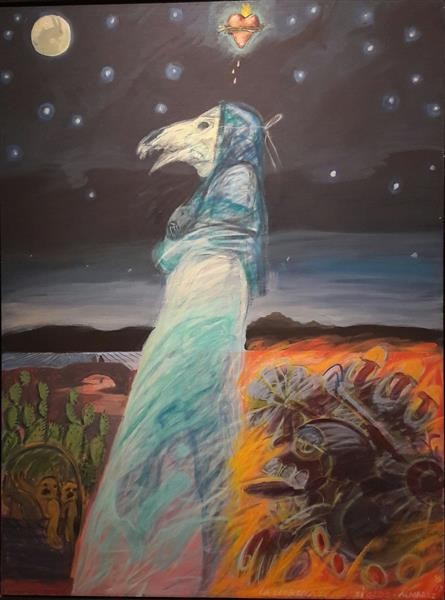

The River Keeps
She is still looking for her children. Do not answer if she calls your name.

The River Keeps
She is still looking for her children. Do not answer if she calls your name.
Feature map
Level-by-level features, as the figure refined them.
The Weeping & Salt Water
The Weeping — Action · 1 CE.
Tier II · Controller · Suggested CE ability: CHA · Primary verb: Weep Your technique save DC = 8 + your proficiency bonus + your CHA modifier. "Her water" means any area flooded by your technique: black, still, salt-tasting, difficult terrain for your enemies. She knows the name of anyone who has lost someone — and speaks it in the dead one's voice.
The Weeping — Action · 1 CE. You wail. Each hostile creature within 30 ft that can hear you must make a WIS save or be frightened until the end of its next turn — it hears the voice of someone it grieves for, weeping. (A creature that is deafened is unaffected; silence, again, is safety.) Salt Water (passive). Open water within 30 ft of you turns black and still. It is difficult terrain for your enemies to wade through, and it tastes of salt. No one can explain why.
Come to the Water & The Riverbed
Come to the Water — Action · 3 CE.
Come to the Water — Action · 3 CE. Choose one creature within 30 ft that can hear you. It must make a WIS save or use its reaction to move up to 15 ft toward you — toward the nearest of her water. It does not want to. Its feet do not care. (This is forced movement, not charm; it cannot be talked out of, only saved against.) The Riverbed — Bonus action · 2 CE. You flood a 20-ft-radius area within 60 ft: it becomes 2-ft-deep black water — her water — for 1 minute. Difficult terrain for enemies. The weeping is louder here.
Drown the Sorrow & Her Children's Names
Drown the Sorrow — Action · 5 CE.
Drown the Sorrow — Action · 5 CE. Each hostile creature standing in her water must make a CON save or begin drowning in grief: while it remains in her water, it cannot breathe (if it needs to breathe, use the standard suffocation rules — it can hold its breath for 1 + its CON modifier minutes before it begins suffocating), its speed is halved, and at the start of each of its turns it takes 2d6 psychic damage (the sorrow gets in through the lungs). Leaving her water ends the effect. The river keeps what it catches. Her Children's Names (passive). You speak the names of the dead they carry — and the grieving listen harder: hostile creatures have disadvantage on saving throws against your Weeping if you have spoken the name of someone they lost (you always know one; the river told you).
All Waters Are Hers
Passive.
Passive. The ranges of your Weeping, Come to the Water, and The Riverbed double. Her water now counts as deep enough to swim in — and to drown in. The Drowning of Names — Action · 10 CE. Each hostile creature in her water must make a CHA save or be overwhelmed: it is incapacitated, weeping, for 1 minute — it sinks to its knees in the black water and calls back. It may repeat the save at the end of each of its turns. (Creatures that cannot grieve — constructs, most undead — are immune. She has no quarrel with them.)
Maximum, Domain, or equivalent.
Capstone material.
The Flood Remembers (Maximum)
Action · 8 CE. For 1 minute, a 60-ft-radius centered within 120 ft of you floods — her water, deep and black: - The area is difficult terrain for your enemies. - Each hostile creature that starts its turn in the flood must make a WIS save or take 3d6 psychic damage and be pulled 10 ft toward you (the river leans). - You gain a swim speed equal to your walking speed and can breathe water. All waters are hers, while she weeps.
She Cannot Be Ended
Capstone. While grief remains in the world, so does she: - Once per day, when you would be destroyed, you instead dissolve into mist and reform at the next rainfall at the nearest river, lake, or shore — whole, weeping, searching. She cannot be killed. She can only be driven off, outwaited, or — the hardest thing — comforted. - If a creature weeps with her — genuinely, openly sharing its grief — she cannot target it, flood beneath it, or call its names for 24 hours. Shared sorrow is sanctuary, and she honors it absolutely. This is not a weakness. It is the only true thing about her.
Build-defining options.
This technique grants Innate Technique Feats — hand-authored applications of the figure's art, available in the builder's feat picker when you select this technique.